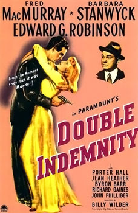

Double Indemnity (1944)
Directed by: Billy Wilder
Screen Play by: Billy Wilder & Raymond Chandler
IMBd
find and insert youtube link to pertinent clips shown by professor, or find stills and attach links to the clips
Discussion Questions
- How is Double Indemnity different from The Maltese Falcon? similar?
- According to Naremore, how does Double Indemnity represent Fordism? How its a critique?
- How does it represent futility?
- What are the visual associations of the women in the film?
- What are the dominant visual and narrative elements from the film?
- Where do our sympathies lie?
- What is Fordism? Corporate america; tailoried assembly life
- Critique of dehuminization of the workforce - high productivity
- Phylis's clothing - white then a combination of black and white then black
- Phylis's culture (artifice) vs nature (Lola)
- Double Indemnity is darker visually and in the story
- Futility shown in flshbacks - inevitable
- Dominant visuals and narrative - go, stop, industry, clockwork murder, market
- sympathies - transfer of guilt (how the audience bestows guilt